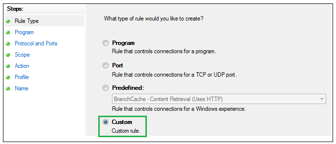
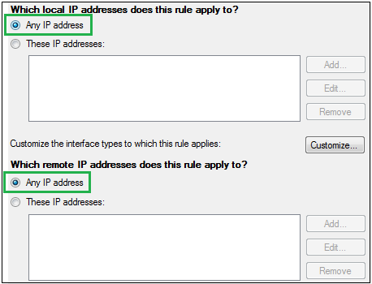
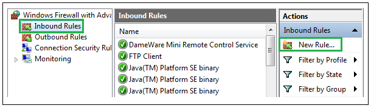
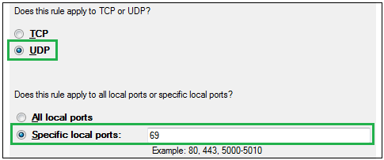
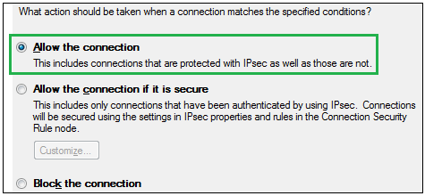

Firewall settings
- Open up, Start -> Control panel -> Windows firewall, and choose "Allow a program or feature…"

- Mark all 3 checkbox under fw_upgrader and press "OK" (Login may be required under "Change settings")

Protocol settings
- Open up, Start -> Control panel -> Administrative Tools -> Windows firewall with Advanced Security
- Click -> Inbound Rules -> New Rule

- Choose custom and click next 
- Enter "Protocol and Ports" and set the Protocol type to ICMPv4 and click customize

- Choose Specific ICMP types, check mark Echo Request, click OK and click nex

- Choose Any IP address in both and click next 
- Choose Allow the connection and click next

- Check mark all three and click next

- Type in a name e.g. "Echo Request" and click finish
Port settings
Now the first rule is ready and the second rule can be configured
- Open up, Start -> Control panel -> Administrative Tools -> Windows firewall with Advanced Security
- Click -> Inbound Rules -> New Rule 
- Choose port and click next

- Choose UDP and Specific local ports. Set it to 69 and click next 
- Choose allow the connection and click next 
- Check mark all three and click next

- Type in a name e.g. "TFTP UDP 69" and click finish